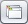

Os dados do licenciado são as informações do seu estabelecimento dentro do sistema LaudoeCia. Tais informações são utilizadas pelo sistema, auxiliando em cadastros e sendo impressas nos laudos e relatórios.
Esta configuração é acessada pelo menu Ferramentas » Dados do Licenciado. Ao abrir esta opção, o sistema mostra a seguinte tela.
Para iniciar a configuração, clique no botão  e preencha os campos conforme descritos a seguir:
e preencha os campos conforme descritos a seguir:
|
CNES - preencha com o código de registro do seu estabelecimento de acordo com o Cadastro Nacional de Estabelecimentos de Saúde. Caso prefira, busque na base de dados clicando no botão .
CNPJ/CPF - preencha com o CNPJ do seu estabelecimento ou CPF registrado no CNES. |
Nome Fantasia / Razão Social - nome fantasia e razão social do seu estabelecimento.
|
Endereço (CEP) - preencha com o numero do CEP do endereço do seu estabelecimento. Caso não tenha essa informação, busque na base de dados clicando no botão .
Contatos - preencha os contatos (telefones, e-mail e website) do seu estabelecimento. |
Após preencher o formulário, clique no botão  .
.